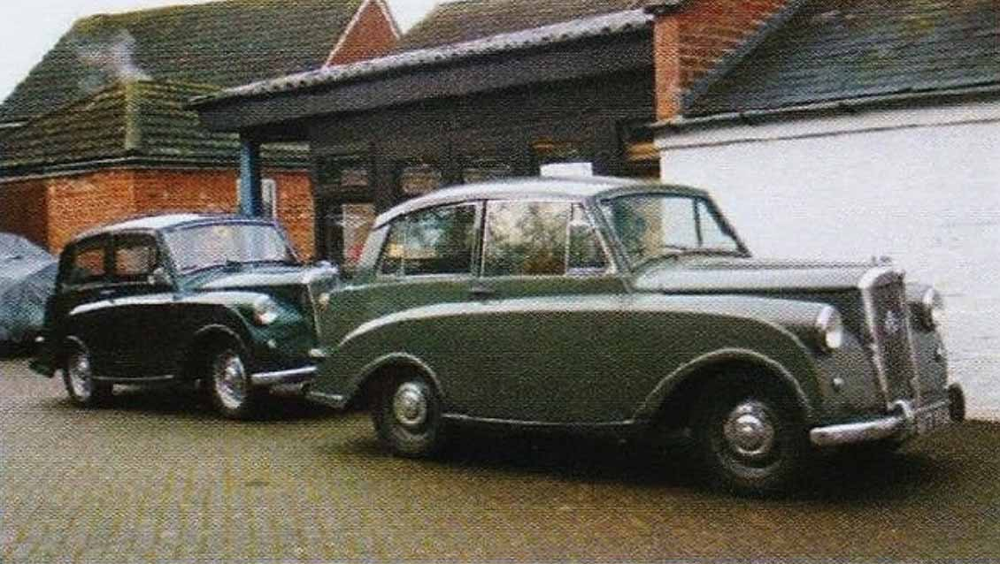

New Venue for the 2018 AGM
To Lubenham we go!
· 18th March 2018
This year’s annual general meeting of the TMC is to be held at a new venue. For many years now, we have had our annual get-together at the Holiday Inn in Walsall, but this year we are starting-out on a new adventure at the Triumph Sports Six Club HQ, at Lubenham in Leicestershire. This is also where our spares department is now housed; capably run and organised by Paul Burgess.
This new venue has several advantages over its predecessor, including a museum, a shop, a bar and of course our own spares ‘shop’ all being open before the meeting, which starts at 12:30 PM.
Let’s make this year’s meeting even better attended than last year. The club’s future is currently looking bright, with a brand-new website and a number of new members getting involved in the running of the club. We’re also very fortunate to have so many experienced members continuing to contribute enormously to ‘keeping the show on the road’. In the US, TMC members are also particularly active at the moment.
We’d love to see you at the AGM – If you are intending to come along, just let the secretary know so that sufficient refreshments can be made available.
Click here for more details… (AGM has already taken place so the agenda is no longer available).